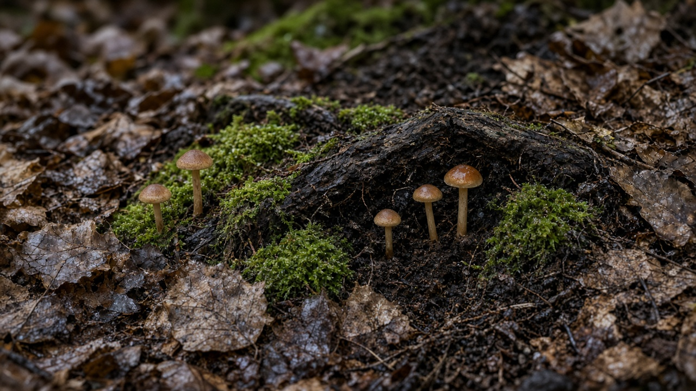
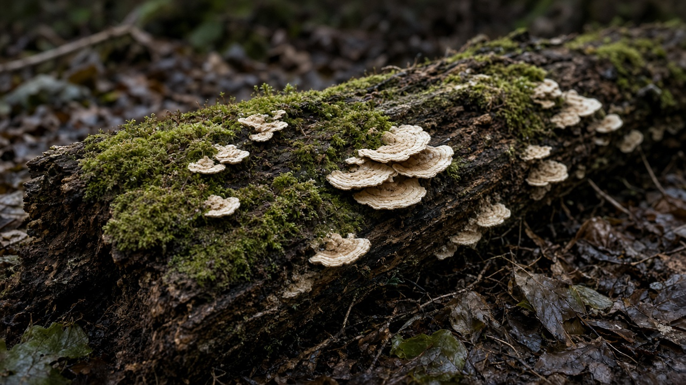
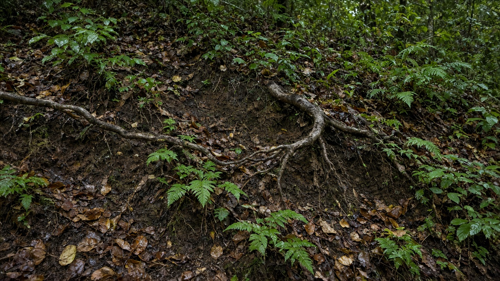

Soil Ecology and Forest Floor Processes
Published on August 20, 2026

The forest floor is where litter, roots, fungi, animals, and minerals meet, turning dead leaves and wood into nutrients that trees reuse. Layers of fresh litter, partly decomposed duff, and mineral soil host bacteria, fungi, mites, springtails, earthworms, and termites that fragment organic matter and mix it downward. Mycorrhizal fungi extend the effective root surface of most forest trees, trading soil phosphorus and nitrogen for plant carbon and linking stems into networks that can share resources after disturbance. Soil structure—aggregates, pores, and organic coatings—controls infiltration, aeration, and the habitat of this hidden community. A stand that looks green above can still be impoverished below if compaction, erosion, or litter raking has stripped this living floor.
Decomposition rates depend on climate, litter chemistry, and the soil food web. Tough, resinous needles decay slowly and build thick organic horizons in cold or dry forests, while soft tropical leaves cycle nutrients in months, leaving little surplus in the mineral soil. Dead wood is not waste: it stores moisture, hosts insects and fungi, and slowly releases carbon and cations. Fire, flooding, and freeze–thaw reset these processes, sometimes stimulating a flush of available nitrogen, sometimes volatilizing it. Heavy machinery, overgrazing, and repeated litter collection reduce porosity and microbial biomass, so seedlings fail even when seed is present. Measuring organic depth, bulk density, and fungal hyphal length therefore belongs in forest inventories alongside diameter and height.
Stewardship of forest soils means keeping the floor covered, limiting compaction to designated skid trails, and returning slash and coarse wood after harvest. Mixed-species planting and retention of native understory feed a more diverse decomposer community than a needle monoculture. In monsoon mountains, including Nepal’s mid-hills, thin soils on steep slopes lose fertility quickly once litter and roots are gone, so community rules on leaf-litter collection and stall feeding protect the same processes that textbooks call nutrient cycling. Restoration that only plants seedlings without rebuilding soil organic matter often stalls; adding nurse shrubs, mulch, and time for fungi to recolonize is part of forest ecology, not an optional extra. Treating soil as living infrastructure keeps carbon, water, and tree growth coupled on the same site.

वन भुइँ कूडा, जरा, ढुसी, जनावर र खनिज भेट्ने ठाउँ हो, जहाँ मृत पात र काठ रूखले पुनः प्रयोग गर्ने पोषकमा बदलिन्छन्। ताजा कूडा, आंशिक विघटित डफ र खनिज माटोका तहमा ब्याक्टेरिया, ढुसी, माइट, स्प्रिङटेल, गँड्यौला र दीमक हुन्छन् जसले जैविक पदार्थ टुक्र्याउँछन् र तल मिसाउँछन्। माइकोराइजल ढुसीले अधिकांश वन रूखको प्रभावकारी जरा सतह बढाउँछन्, माटो फस्फोरस र नाइट्रोजन बिरुवा कार्बनसँग साट्छन् र अवरोधपछि स्रोत बाँड्न सक्ने जालमा काण्ड जोड्छन्। माटो संरचना—एग्रिगेट, छिद्र र जैविक लेप—प्रवेश, हावा र यो लुकेको समुदायको वासस्थान नियन्त्रण गर्छ। माथि हरियो देखिने स्ट्यान्ड पनि तल गरिब हुन सक्छ यदि दबाब, क्षय वा कूडा कुरौलेले यो जीवित भुइँ तानेको छ।
विघटन दर जलवायु, कूडा रसायन र माटो खाद्य जालमा निर्भर हुन्छ। कडा, रेसिनयुक्त सुई बिस्तारै सड्छन् र चिसो वा सुख्खा वनमा बाक्लो जैविक क्षितिज बनाउँछन् भने नरम उष्ण पातले महिनौंमा पोषक चक्र गर्छन्, खनिज माटोमा थोरै बचत छोड्छन्। मृत काठ फोहोर होइन: यसले चिस्यान राख्छ, कीरा र ढुसी बास दिन्छ, र बिस्तारै कार्बन तथा क्याटायन छोड्छ। आगो, बाढी र जम्ने-पग्लनेले यी प्रक्रिया रिसेट गर्छन्, कहिले उपलब्ध नाइट्रोजनको लहर उत्तेजित गर्छन्, कहिले वाष्पीकरण गर्छन्। भारी मेसिनरी, अति चराइ र बारम्बार कूडा संकलनले छिद्रता र सूक्ष्मजीव बायोमास घटाउँछ, त्यसैले बीउ हुँदा पनि बिरुवा असफल हुन्छन्। जैविक गहिराइ, बल्क घनत्व र ढुसी हाइफा लम्बाइ नाप्नु व्यास र उचाइसँगै वन सूचीमा पर्छ।
वन माटो हेरचाह भुइँ ढाकिएको राख्नु, दबाब तोकिएका स्किड गोरेटोमा सीमित गर्नु, र कटानपछि स्ल्यास तथा मोटो काठ फर्काउनु हो। मिश्रित प्रजाति रोपण र मूल तल्लो वन राख्दा सुई एकजातीयभन्दा विविध विघटक समुदाय खुवाउँछ। मनसुन पहाडमा, नेपालका मध्य पहाडसहित, कूडा र जरा गएपछि पातलो माटो उर्वरता चाँडै गुमाउँछ, त्यसैले पात कूडा संकलन र गोठ खुवाइका सामुदायिक नियमले पाठ्यपुस्तकले पोषक चक्र भन्ने त्यही प्रक्रिया जोगाउँछन्। माटो जैविक पदार्थ पुनर्निर्माणविना मात्र बिरुवा रोप्ने पुनर्स्थापना प्रायः अड्किन्छ; नर्स झाडी, मल्च र ढुसी पुनःबसोबासको समय वन पारिस्थितिकीको भाग हो, वैकल्पिक थप होइन। माटोलाई जीवित पूर्वाधार मानेर कार्बन, पानी र रूख वृद्धि एउटै स्थलमा जोडिएका रहन्छन्।

वन फ़र्श वह स्थान है जहाँ कूड़ा, जड़ें, कवक, पशु और खनिज मिलते हैं, मृत पत्तियों और काष्ठ को वृक्षों द्वारा पुनः प्रयुक्त पोषक में बदलते हैं। ताज़ा कूड़ा, आंशिक विघटित डफ़ और खनिज मिट्टी की परतों में बैक्टीरिया, कवक, माइट, स्प्रिंगटेल, केंचुए और दीमक रहते हैं जो जैव पदार्थ टुकड़े करते और नीचे मिलाते हैं। माइकोराइज़ल कवक अधिकांश वन वृक्षों का प्रभावी जड़ सतह बढ़ाते हैं, मिट्टी फास्फोरस और नाइट्रोजन पौधे कार्बन से साटते हैं और विक्षोभ के बाद संसाधन बाँट सकने वाले जाल में तने जोड़ते हैं। मिट्टी संरचना—समुच्चय, छिद्र और जैव लेप—प्रवेश, वायु और इस छिपे समुदाय का आवास नियंत्रित करती है। ऊपर हरा दिखता स्टैंड नीचे गरीब हो सकता है यदि दबाव, क्षय या कूड़ा कुरेदना ने इस जीवित फ़र्श को खींच लिया है।
विघटन दर जलवायु, कूड़ा रसायन और मृदा खाद्य जाल पर निर्भर करती है। कड़ी, रेजिनयुक्त सुइयाँ धीरे सड़ती हैं और ठंडे या शुष्क वनों में मोटी जैव क्षितिज बनाती हैं जबकि नरम उष्ण पत्तियाँ महीनों में पोषक चक्रित करती हैं, खनिज मिट्टी में थोड़ी बचत छोड़ती हैं। मृत काष्ठ कचरा नहीं है: यह नमी रखता, कीट और कवक बसाता, और धीरे कार्बन तथा धनायन छोड़ता है। आग, बाढ़ और जमाव–पिघलाव इन प्रक्रियाओं को रीसेट करते हैं, कभी उपलब्ध नाइट्रोजन की लहर उत्तेजित करते, कभी वाष्पित करते हैं। भारी मशीनरी, अति चरान और बार-बार कूड़ा संग्रह छिद्रता और सूक्ष्मजीव बायोमास घटाते हैं, इसलिए बीज होने पर भी पौधे असफल होते हैं। जैव गहराई, बल्क घनत्व और कवक हाइफ़ा लंबाई नापना व्यास और ऊँचाई के साथ वन सूची में आता है।
वन मिट्टी प्रबंधन फ़र्श ढका रखना, दबाव निर्धारित स्किड पगडंडियों तक सीमित करना, और कटाई के बाद स्लैश तथा मोटा काष्ठ लौटाना है। मिश्रित प्रजाति रोपण और मूल अधोवन रखने से सुई एकजातीय से अधिक विविध विघटक समुदाय पलता है। मानसून पहाड़ों में, नेपाल की मध्य पहाड़ियों सहित, कूड़ा और जड़ें जाने के बाद पतली मिट्टी उर्वरता जल्दी खोती है, इसलिए पत्ती कूड़ा संग्रह और गोठ खिलाई के सामुदायिक नियम पाठ्यपुस्तक के पोषक चक्र कही जाने वाली वही प्रक्रियाएँ बचाते हैं। मृदा जैव पदार्थ पुनर्निर्माण के बिना केवल पौधे रोपने वाली पुनर्स्थापना अक्सर रुक जाती है; नर्स झाड़ियाँ, मल्च और कवक पुनर्वास का समय वन पारिस्थितिकी का भाग है, वैकल्पिक जोड़ नहीं। मिट्टी को जीवित अवसंरचना मानकर कार्बन, जल और वृक्ष वृद्धि एक ही स्थल पर जुड़े रहते हैं।